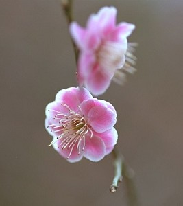

学佛该学何宗何派?
冯冯
常常有人问我学佛应于何宗何派，有些发问是纯出好奇，另一些则基于党同伐异，或者是分别心，对付后面种种问题，我就说是“冬瓜盅”。
其实我无宗派，自称“冬瓜盅”， 也并非恶作剧的谐谑，或多或少有些贴切，因为冬瓜盅内有各种杂料，云耳，金针菜，香菇，发菜，吃荤的还有火腿，鸡肉，莲子，腰果，虾米什么都带一点，名为冬瓜盅，实为大杂烩，不能单以火腿或鸡肉来衡量，也不能说冬瓜盅是冬菰味，火腿味或金针菜。智识的接纳与含容，是综合性质的，说冬瓜盅，也毫无不敬佛法之 意。只是一种谦喻，自比为笨冬瓜，却又什么作料都接受一点，也不纯不精，庶几也不离佛法无所不容之原意。
本来，原始佛教也并无分宗派，都是听佛陀的开示，四念处八正道、五戒、十二因缘。佛陀说法四十九年，经论浩瀚，后世弟子有谁能概全其意？各人各修其中一端，或一经、或一论、或只守戒，渐成宗派，也难免流于门户之见，已把佛法范围缩小，殊非佛陀原意，现代人学佛，不宜先存门户之见，分宗分派，党同伐异，自赞贬他，自诩是唯一正法，贬评别宗 不是真传，各派自成山头主义，自尊自大，目无余子，互相毁谤攻讦，把佛教变成政治社会与商业世系，这都不是原始佛教的原意，徒招腐化败亡。别看它们巨庙连云纷起，巨像庄严，那只是表面的场面，只是佛教商业化的派头与噱头，戒律早已流于形式，佛法慈悲精神也成为空洞口号，这是现代人佛教的不幸，学佛人苦光徒 包装去选择宗派，等于跟着商业广告去购买奢华物品。看到各宗派山头主义的互相倾轧，也使人莫知所徒，家家卖花都赞自家花香，别家不新鲜，学佛人到底应选学那一家宗派才好？
各宗派的修行方法，大致上仍是师法佛陀原始教法，只是各宗修法重点各异，次序不同。有些宗派以修诵真言为主，有些宗派以持戒为主，有些宗派以经论为重，有些宗派以苦行为主，有些宗派以慈善工作为先，有些宗派以隐逸山林为要，有些宗派以练武强身为主，有些宗派以静坐瞑想为重，有些宗派注重仪轨形式，有些宗派不重形式，有些宗派讲考文字精义，有些宗派不着文字不立文字......琳琅种种，看似不同，其实各皆只是原始佛教的一鳞一爪， 只是佛法的一端，并非全部，也未能尽抒佛陀教法原意，须知佛陀说法，无所不包，无所不含，并不能以任何一宗一派自夸正宗就可以代表佛法全部。各宗各派当然也各有擅胜，各有优点，但也不免流于偏，精于某些方面却疏于另一些范围。
武林的宗派可能有独创，武当山与 少林寺的武技绝无需同，崆峒派的飞剑独步天下，祈连山的骑术武技自成一家，长白山的气功另有奥妙，各派争雄，势同水火，但是佛教的宗派各皆同源，出于佛陀教法，只因佛法太浩瀚！学佛难以全学，只好择其一端入手渐进，而不是从一而终，更无规定不得另投明师，武林人另投宗派是犯禁的斯师灭祖大罪，佛教却没有此 种禁条。佛教鼓励学人游方修学多习，遍拜名山，周访各宗，以增饶佛学见识，增扩胸襟，佛教宗派，原无彼此倾轧，也无山头主义，到了现代才因社会商业化而形成互相排斥，“佛争一炷香”，此语并非来自佛教。而是外面人的口气。
学佛应往何宗何派？这须看各人自己的兴趣、性向、方便，也无 优劣先后之分，正信正道的任何宗派，是以原始佛陀之教为根源与目标的，都可以学。
原载《佛网》网站
2000 年 ── 2002 年